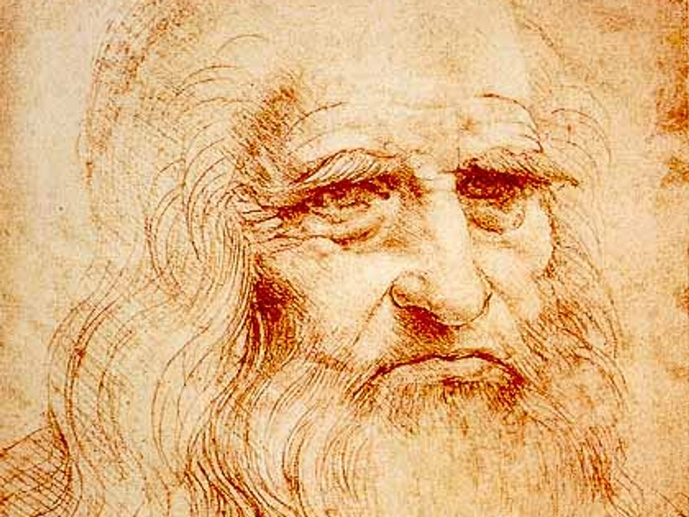
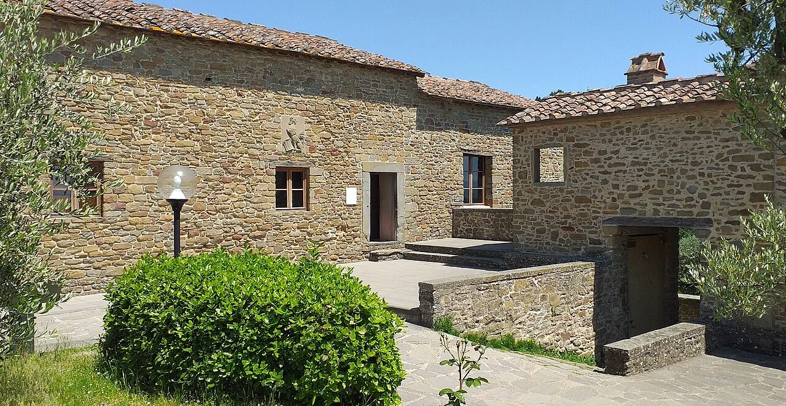
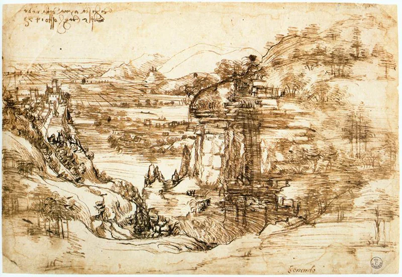
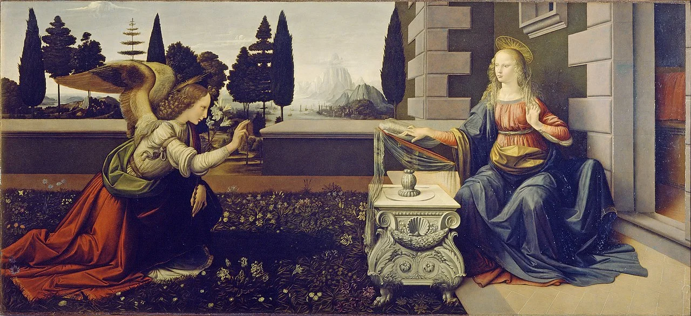
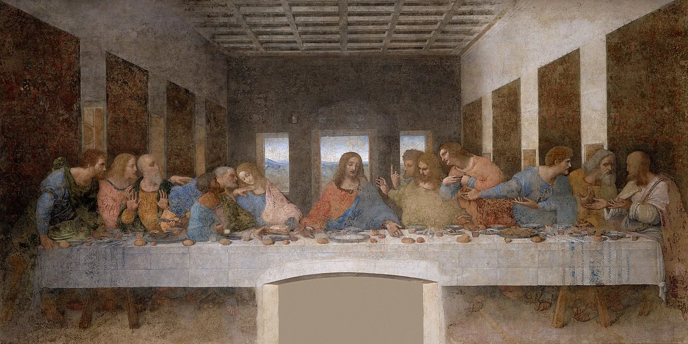

Leonardo da Vinci
Leonardo da Vinci was an Italian painter, inventor, and scientist, renowned for his contributions to art and science.
About
Leonardo da Vinci, born on April 15, 1452, in Vinci, Italy, is celebrated as one of history's most extraordinary minds. A true polymath, Leonardo excelled in painting, sculpture, engineering, anatomy, and invention, embodying the spirit of the Renaissance.
Artistic Genius
Leonardo's artistic legacy includes some of the most renowned masterpieces in the world. The Mona Lisa, with its mysterious smile and masterful use of sfumato, remains an icon of portrait art. The Last Supper demonstrates his innovative approach to composition and perspective, capturing a pivotal moment with profound emotional depth. His detailed anatomical sketches underscore his belief in the importance of understanding human anatomy to create realistic art.
Scientific and Engineering Vision
Leonardo's artistic legacy includes some of the most renowned masterpieces in the world. The Mona Lisa, with its mysterious smile and masterful use of sfumato, remains an icon of portrait art. The Last Supper demonstrates his innovative approach to composition and perspective, capturing a pivotal moment with profound emotional depth. His detailed anatomical sketches underscore his belief in the importance of understanding human anatomy to create realistic art.
History
The house in Anchiano where Leonardo da Vinci spent his childhood, located 3 km from Vinci, Tuscany.
Portfolio
Leonardo da Vinci's Paisagem do Arno (1473) is an early landscape drawing, capturing the Arno Valley with meticulous detail and depth.
Leonardo da Vinci's Annunciazione (c. 1472-1475) portrays the angel Gabriel announcing to Mary, highlighting his early use of perspective.
Leonardo da Vinci's The Last Supper (1495-1498) depicts Jesus' final meal with his disciples, renowned for its composition and emotional depth.